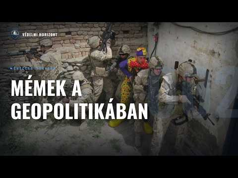

MÉMEK A GEOPOLITIKÁBAN - Posztmodern, Z-generációs mémek megjelenése

Leírás
Résztvevők: Zsebeházy Bálint, Pásztor Ákos
Üdvözöljük a Védelmi Horizont kutatóműhely második adásában. Ebben az epizódban a mémek geopolitikai és stratégiai szerepét vizsgáljuk: hogyan válnak politikusok nevetségessé, hogyan toboroz a hadsereg like-okkal, és mire képes egy szervezett dezinformációs kampány – avagy mi az a memetic warfare?
Leirat beszélőnként
Üdv mindenkinek! Ez itt a Védelmi Horizont. Az a podcast, ahol gazdasági, hadiipari és biztonságpolitikai szempontok alapján nézzük rá ugyanarra a témára, egyszerre, egy asztalnál. A nevem Pásztor Ákos, és most ketten ülünk a mikrofonok mögött. Velem szemben Zsebeházi Bálint. Sziasztok! A mai adásban a mém kultúra és azon belül is ennek a kül- és biztonságpolitikai vonatkozása került elítékre. Megkérem Balintot, hogy elsőnek definiálja a hallgatóságunknak, hogy mit értünk pontosan mémek alatt.
Na, nekünk igazából én most a Britannica definícióját cítelnám ide. Tehát a mém a kulturális információ utánzás útján terjedő egysége. A mém kifejezést a görög mímema, azaz utánzott szóból Richard Dawkins, brit evolúcióbiológus vezette be 1976-os könyvében. Tehát gyakorlatilag az alapvető definíciója egy ilyen utánzó Mémelő dolgot jelentett, de ez a mai kultúránkban már lehet, hogy kicsit jóval megváltozott. Mostán azért is érdekes ez már, hogy mi fogunk beszélni a mémekről, nagyrészt ugye saját megélésünkről fogunk beszélni. Tehát, hogy most beraktunk ide egy erősebb definíciót, azonban Majd a beszélgetés során érezhetik a hallgatók, hogy ez kicsit funkibb adás lesz,
Igen, meg egyébként szerintem, amit be is raktál így definícióba, az jó rész. Szerintem egyébként a mimika szót akarja valamilyen módon definiálni, illetve ebből bal levezetve. Másrészt szerintem még amit bevezetnék, már így ha funkibb, vagy ez a viccesebb oldalt mondtad, szerintem mindenképpen érdemes megemlíteni, hogy sokan ilyen nagyon ilyen z-generációs dolognak tartják a mémeket. De igazából gyakorlatilag így a úgymond modern internet megjelenésével ez egy idő. Szóval már a 2000-es években is bőven voltak ilyen vicces online platformokon, nem tudom, kör-emélyeken terjedő ilyen vicces képek. Gondolom, hogy csak a Trollface-re például, ami abszolút egy ilyen több mint húsz éves dolog egyébként. Vagy amikor én ezt személyes tapasztalatom, illetve így ezek a régi internetes dolgok, ezek érdekeltek mindig is így személyes kutatás, ez a just for fun utánanézés dolognak. Egyébként amikor így nagyon berobbant így az egész világon ezek a vicces képek stb. elterjedése, ez egyébként a Justin Bieber nevű énekesnek a kifigurázása, mémelése volt, ilyen 2008, 2009, 2010 felé egyébként.
Igen, de még tényleg a definíció, ezt kiegészíteném, hogy igen, hogy gyakorlatilag azért fontos tényleg ez a, úgymond ilyen biológiai megközelítés szerintem, mert hogy a mémek, ez igazából a mémeknek a terjedésére utal, meg ahogyan beépül a társadalmukba, tehát hogy ezek a Mindennyian felismerünk bizonyos képeket, viselkedésmintákat, mozgásokat, zenéket, akár hogyha videós tartalmakra gondolunk, és ezekre ilyen közösen tudunk reagálni, és mindenki kb. ugyanúgy rezonál rá. Ugye ezért lesznek ilyen, az ilyen internetes tartalmak ilyen nagyon organikusan viccesek sokszor, mert hogy így mindenki... Azt jut eszébe rólam, hogy hasonló dolgok, és hogy igen, hogy itt nagyon fontos tényleg ez a kulturális elem benne, meg ez kicsit valamennyire így a közös megélésünk is a valósággal, ez a kifigurázás. Ugye itt még talán az az érdekes, hogy ugye van ez a mémetik warfare nevű Jelenség, ami szintén mondjuk ott a szakirodalom igazából úgy apostrofálja, tehát egy elég tágértelmezés, tehát hogy igazából egy ilyen képes vagy szöveges vagy videós tartalom, ami ilyen így terjed meg az interneten, általában a social mediában. Tehát, hogy itt amúgy szerintem nincs egy ilyen egységes fogalom valószínűleg, de ennek
Igen, mivel szerintem ez en bloc így a modern internetnek az átka egyébként. Modern internet alatt nem magát az internet szót, hanem ennek már ez a web 2.0, azt hiszem ugye úgy hívják ezt. Ezeknek a fogalmainak ilyen pontos definíciója egyszerűen még nincs, mert annyira szertágazó és annyira gyorsan fejlődik, változik, hogy nagyon nehéz leírni. Gondolom így az első ipari forradalom körüli Nyelvúító mozgalmunk az hasonló nehézségekkel szembesül, csak hogy így egy történelmi példát mondjak.
Amúgy ez egy érdekes párhuzam.
Igen. A kedves hallgatóságnak mondom, hogy itt leginkább tőlem várhatóak ilyen, valamilyen módú történelmi párhuzamkeresések, mindig ha így egy modern problémát felvetünk.
Igen, én utálom a történelmi felhúzókat sokszor, de erről majd biztos fogok még vitatkozni a podcastben is, hogy sokszor miért. Szerintem én sose gondoltam mondjuk determinisztikusnak a történelmet, és ebből azért sok minden következik, hogy például a történel nem ismétlő magát, vagy hogy nagyon Mindig nagyon más jelenségek vannak, ugye én mindig kontextusában szerettem ezeket nézni nagyon.
Nekem viszont abszolút determinisztikus a történelem felfogásom, úgyhogy igen, ebből nyilván vannak nézetkülönbségeink, de hát ez ilyen.
Ez a vicces, vagy ez a lényeg. Unalmas is lenne, ha mindenben együtt értenénk itt. De akkor kezdjük is el igazából, hogy miről szerettünk volna beszélni. Most ilyen tényleg ebben a blogban most ilyen személyes megélésekről, hogy gyakorlatilag milyen mémekkel találkozunk mi a mindennapokban, miközben pörgetjük az Instát vagy hasonlók. Neked mondjuk mennyi a képernyő idődálkos?
Attól függ nyilván amúgy változó is, hogy melyik eszközen használom. Nyilván, ha így vizsgai időszak alatt nyilván a laptop az kétszeresére háromszoros ára nő, de egy ilyen 7 óra körüli szokott lenni egyébként. Ja, te a laptopodon is nézed?
Igen.
Még én azt sem értem.
Megnézem, hogy ott mennyit töltök. Informatikusként szívás is lenne, hogyha keveset töltenék el attól, hogy azt jelenti, hogy nem keresek pénzt. Na, nézzük is meg. Akkor én alapvetően, ez most kicsit ilyen lebutítva, de megpróbáltam Azokat ilyen a biztonságpolitikához meg geopolitikához kapcsolódó mémeket, amikkel én találkozok, azokat megpróbáltam egy ilyen rendszerbe helyezni, de ez teljesen saját tapasztalat, meg teljesen saját feedem alapján, tehát teljesen saját fórium alapján, tehát ez igazából nincsen olyan, ez fontos leszögezni. Azonban tehát az első ilyen nagyobb kategória nekem ez a policy mémelés volt, ami szakpolitikákat, aminek két alfaja van, van, ami szakpolitikákról szól és azokat teszi nevetségessé, mondjuk Trumpnál láttunk sokszor ilyeneket, hogy valamiféle beszól mondjuk egy vezetőnek, vagy csinál valamilyenfajta policyt, vagy akár valamilyen döntésről szomrot állít, meg ilyesmi, és azokat elkezdik nagyon sokan mémelni. És akkor lényegében így nevetségesé teszik a politikáját és ezzel magát a szemét is. Emellett a másik alfaj, amiről viszont szerintem kevesebbet beszélnek, azok az, amikor a szavazókon keresztül vagy az állampolgárokon keresztül tesznek nevetségessé egy policy-t, vagy egy országot, vagy egy adott politikust, pártot. Tehát mondjuk ilyen az utcán megkérdeztük a magást. És akkor oda mennek hozzá, és feltesznek ilyen kérdéseket nekik. Mondjuk, de vannak ezek az utcán megkeresős, amiről így hirtelen amúgy neked jut eszedbe pont egy ilyen kérdés, amit fel tudtok tenni.
Nekem egyébként most egy hazai ugrik be, és ez már sok évvel ezelőtti, ezt emlékszem, még gimis évek alatt. Röhögtünk ezen nagyon sokat, hogy azt hiszem Pécset volt, hogy megkérdezték emberektől, hogy ez azt hiszem a migránsválság idejára játszódik Magyarországon egy 10-11 évvel ezelőtt, hogy mit szólnának a pécsi lakosok, ha bevezetnék az arab számokat Magyarországon.
Igen, és akkor lényegében mindenki nyilván fel volt háborodva, hogy
Igen, meg a személyes kedvencem az volt, hogy egy történészhölgy nyilatkozott egyébként, és akkor ő mondta, hogy ő ezt mélyebb kontextusban látja, és tudja, hogy ez egyébként mit jelent, és hogy ez mennyire káros lenne hosszabb távon. A videót, ha megtaláljuk, belinkeljük a leírásban egyébként, mert szerintem egy abszolút kóla dokumentum egyébként.
Igen, tehát, hogy a másik ez a szó azoknak a mélyemelése. Itt majd van egy Insta oldal is amúgy, ami Twitteren, vagy hát én Instán, X-en igen, hogy X-en ugye vannak különböző, elkezdenek vitatkozni a social médián a republikánus, illetve...
Demokrata fél. Elkezdek vitatkozni.
És akkor ugye X-en meg lehet kérdezni a grokot, hogy akkor kérlek validáld ezt a forrást, vagy nézz utána ennek meg ennek. És így nekem legalábbis valami szórakoztató volt mindig, ahogy a magás emberkék azok Valamilyen vitába keverednek, aztán megkérdezik a grokot, hogy na de igazomban, ugye, na de igazomban. Aztán a grok elmondja, hogy nem, ez egy teljesen fals miszió, mely is van, amit terjesztek az interneten. Az ilyen kétes alakok is, akkor ennek ne higgy. Aztán nyilván elküldik a grokot melegebb éghajlatra ez miatt, de majd ezt is belinkeljük pár, illetve egy-két képet, majd megpróbálok ezzel kapcsolatban beszúrni. Hogyha nem tétele a YouTube akár ilyen szerzőjogok miatt, de igen, tehát akkor csak igazából ez az első ilyen nagyobb kategória, hogy szakpolitikák, nevetséges értékele és szavazók vagy társadalmak úgynevezett ilyen beugratása.
Igen, és itt előkerül az a dolog, hogy ezt nyilván hiába, hogy vicces, stb. szinte rögtön politikai eszközként is lehet használni a humort, illetve adott esetben a gúnyt is.
Igen, de ez fontos, hogy ez nem csak a belpolitikában jelenik meg, hanem ez adott országonok a soft power-jét is egyébként tudja. Csökkenteni, erősíteni.
Például az arabok a számaikat tudják így exportálni különböző országokba.
Akár. De ez mellett ez nagyon fontos, hogy... Vagy hát van, ugye megjelentek ezek a videók is, amikor mondjuk amerikaiakat kérdeznek arról, hogy ez az ország holta lehet tud térképen. És akkor nem tud rámutatni, meg hasonlók. De amúgy ez engem az is érdekelne, hogyha ugyanígy járkálnék az utcán, akkor mondjuk azt mondanám, hogy hol van Washington állam, és akkor mutass rá, és akkor tud nekem.
Szerintem egyébként Európában többen tud, mármint hogy szerintem ismerik, vagy jó Kaliforniát még találunk. Egy átlag európai, most teljesen mindegy, hogy magyarra, portugálra vagy bolgárra gondolunk, szerintem több amerikai államot ismer, mint amennyi európai országot ismernek amerikai állampolgárok, nekem ez a személyes véleményem.
Amúgy én nem tudom, és pont erre akarok rávilegíteni igazából, hogy amúgy meg fogalmam sincs ezzel kapcsolatban, azért is, mert jó, de Igen, azért is, mert hogy sokszor nagyon kiragadottak igazából, vagy hogy mondjuk az Egyesült Államokban ugyanúgy megjelennek a világ legjobb egyetemei is, de nyilván az utcaemberét megkérdezem valamiről, az nem biztos, hogy fogja tudni. De ez, hogy mondjuk az európaiak jobban ismerik az Egyesült Államokat, hát valahol így Kicsit amúgy nem nyilvánvaló, hogy nagyon sok amerikai sorozatot nézünk, fogyasztunk emellett,
De nyilván abszolút, pláne itt Európában szerintem nagyon-nagyon kirívó az amerikai kultúrdominancia egyébként.
Igen, de ez is, meg az is, hogy most egy amerikainak mondjuk miért kell hallani a Magyarországról, mint egy szuperhatalom, neki az igazából, vagy van egy ilyen fajta tendencia is, hogy minél nagyobb egy ország, annál fontosabb a belpolitika és annál kevésbé a külpolitika, Szerintem az európaiak ezért is jobb, lehetnek akár jobbak ilyen kérdésekben.
Igen, szerintem egy átlag európainak nyilván a külpolitikai tudása sokkal jobb, mint egy amerikainak, és benne van nyilván az okok, amennyire felsoroltál, de én azt mondom, hogy itt a kitettsége az adott gazdaságoknak is nagyon igaz.
Igen. Na jó, szerintem ezt a policy meg szavazók művelésén amúgy ezt kitárgyaltuk. Igen. Akkor nézzük meg amúgy, hogy a haderők meg a hadipari szereplőknek egyébként milyen szerepe van a social medián, mondjuk Instagramon. Nekem, jó ez már megint személyes, de rengeteg hadipari vállalatnak követem az Insta oldalát, meg haderőknek is, meg... Egyéni perverziók című roboton következik. Megkövetek. Több haderőt is akár különböző, ami nagyon érdekes, mert különböző hadosztályoknak vagy tehát nem feltétlen egész haderőknek van Insta oldala, de mondjuk az Egyesült Államokban mondjuk a USS Fordnak van saját Insta oldala, ahová ilyen izéket.
Kérlek, mondd el a hallgatóknak, hogy pontosan mi is ez. A USS repülőgép hordozó, amerikai repülőgép hordozó. És ha jól tudom, az a legnagyobb az egész világon, igaz? Vagy legalábbis a legnagyobb kapacitású. Igen, igen, igen, igen.
Igen. Hát ezek az amerikai szuperkerjőrök a legnagyobbak. De most nem is ez a lényeg. Majd lehet, hogy kéne tartani, mert amúgy kommentben előzőnek kaptunk siet, hogy beszéljünk kicsit jobban a kínai repülőgép hordozókról, és majd lehet, hogy kéne egy ilyen részt is. Utána nézhetünk, persze.
Egy csak repülőgép hordozókról egy részt, amúgy ez izgi lenne.
Tehát, hogy mit is jelent ez, hogy haderőknek, hadépari szereplőknek van insta oldaluk meg social médiájuk? Szerintem amúgy ebben van egy ilyen kisebb fajta militarizáció, ami így ilyen háttérben meghúzódik, mert hogy mondjuk sokkal jobb fényben tünteti fel a különböző haderőket, meg hogy mivel foglalkoznak, tehát Ezeknek a hadsereget nyilván akkor vettük be, akkor alkalmazzuk, amikor a leghatékonyabban el akarunk pusztítani valami más embert. És emellett azért érdekes, amikor megjelennek ezek a mém oldalak, ilyen kis vicces, ilyen nagyon menő, meg nem tudom, és akkor éppen megy egy iráni kórházat lebombázni, az a repülőgép, és amúgy ilyen Menü, izé, hogy felszáll, meg nem tudom. Tehát ez mindig nagyon abszurd volt.
Abszurd, meg egy idő után visszás is egyébként, szóval ezt szintén ilyen amerika, jó részt amerikai vloggerektől látom egyébként, hogy rengeteg ember pont azért, egyrészt követés szempontjából, másrészt ugye nyilván így jellemző, hogy ilyen különböző gyakornoki munkákra így egyszerűen nem jelentkeznek oda nyilván elvi okokból egyébként, és dacára ennek a Úgy mondjuk propagandának, vagy hát közösségi médiás hirdetéseknek úgy nem feltétlenül lett jobb a presztízsük egyébként, mert nyilván aki már eljut ilyen szintre, hogy tudja, hogy pontosan mi ezen vállalatok tevékenysége, az tisztában van ezen vállalatok visszasságaival is.
Jó, de közben meg amúgy, vagy ez nekem is eszembe jutott, hogy gyakorlatilag miért kellenek, tehát Aki tankokat gyárt, illetve vadászgépeket, aznak igazából nem, őneki policymaker-öket kell meggyőznie úgymond, nem az embereket, ez lehetne az első gondolatunk, de közben meg nyilván, mondjuk Németországban a Rheinmetallnak ugye a Hát hogy mondjam, Németországnak azért a különleges múltja miatt nagyon sokáig a rindmetál az meg volt... Zabolázva. Zabolázva, úgymond. Hát azért is, mert mondjuk a Nürnberg iperekben is vettek részt rindmetálosok, és utána... És gondolom nem a vadló oldalán? Hát nem éppen. És akkor például ilyenekre, hogy akkor mégiscsak fontos egyébként a társadalmi elfogadottsága egy vállalatnak, hogy egyáltalán leülnek vele a policymaker-ök, vagy csinálnak vele egy közös fotót. Ez egyébként valami fontos az ilyen dílek megkötésénél, amikor erről van szó. Csak az is érdekes volt, hogy ezeket a... vagy elmegy az ember egy ilyen hadiipari expóra. Én sajnos még nem voltam, de majd lehet egyszer sikerül bepótolni. Ott is ilyen pamfleteket osztogatnak mindenkinek. Nyilván nem Fog ott senki se így vásárolni, meg hogy ez egy baromi bonyolult, mire egy Apache helikoptert mondjuk eladnak, azért egy baromi bonyolult, meg nehézkes, bürokratikus folyamaton kell végigmenni. De hogy mégis ez a presztízs, ez még így is nagyon fontos egyébként, meg ez a fajta marketing a hadipori vállalatoknak. Meg nyilván a hadseregekre áttérve pedig, Tök hatékony toborzóeszköz tud lenni a social media, hogyha jól csinálják. Nekem a kedvencem egyébként ilyen social medias megjelenésben az a Royal Marine Commando. Az Egyesült Királyságnak az ilyen elittengerész gyalogosainak rohadt jó videóik vannak egyébként. És ilyen, hogy tényleg ezekre a, hogy nem ilyen nagy robbantások, meg nem tudom, ilyen flexelés van benne, hanem ilyen, tök jól megcsinálták szerintem azt, lehet, hogy abban is egy videót majd belikkelünk a leírásba. Ezt tök jól megcsinálták, hogy vannak ilyen kommandósoknak ilyen kulcsszavaik, amikre ráhúznak egyes részeket, és csak ilyen nem tudom, hogy a disziplin, meg hasonló ilyen kulcsszavakra ráhúznak. Akkor most pedig eljutunk a harmadik kategóriához, ami tényleg egy olyan random káosz kategóriának mondanék.
Igen, nyilván itt az abszolút a saját Szóval itt abszolút az emberi tényezőt bele kell rakni, úgymond, hogy rengeteg ilyen különböző emberke a világon, részint a politika egyre inkább népszerűsödése és polarizációja, ugye a kettő együtt jár a XXI. század harmadik évtizedétől különösen, szóval ez a 2020-as évek kezdetétől. Így egyre több ember részint minél fiatalabb, így saját kulturális fogyasztása szokás alapján, így sok ilyen saját maga által készített, vagy pedig éppen valahonnan letöltött mémet, azt így továbbad, illetve megoszt különböző oldalakon. És nyilván ez az Instagram Reels verziójában, illetve a TikTokon rohadt gyorsan tud terjedni, ha egy algoritmus felkapja.
Igen, de én itt nem is feltétlen csak arra gondolok, hogy random káosz úgy, hogy az algoritmus szétszórja, hanem arra is, hogy ezek a, tehát ilyen semmi Én alapból nem szeretek ilyen hatalmi érdekeket keresni, mert félre tudja vezetni az elemzést, de hogy így konkrétan semmi értelme. Csak egy ilyen baki parád, vagy nem tudom, hogy hogy mondjam, mondjuk itt például a Bashar al-Assad-os mémekre gondolok.
Igen, nekem a személyes kedvencem az ilyenekből a Bashar al-Assad-os mémek mellett a Fekvős Saddam Hussein, Leírást elmondanék a nézőknek, ezt nyilván be fogunk idevágni különbözőeket, hogy ugye ez úgy van, ez a Saddam Hussein's hidden spot, szóval a Saddam Hussein-nek a rejtőzködő helye, ezek azok a mémek, amik valamiért föl lett kapva egyébként, Mert Saddam Hussein-t ugye fekvő helyzetben találták meg 2003 év végén rejtőzködött Tikrit mellett az iraki sivatagban, és valamiért ez egyszerűen fel lett kapva, hogy ilyen amerikai kormányzati ábrában ábrázolták Saddam Hussein-t, ilyen fekvő helyzetben piros volt, gyakorlatilag mintha egy ilyen Körül ívelt valami, és kvázi olyan hangulata van, mintha egy egyiptomi múmia lenne egyébként, és ez rettenetesen épszerű lett valami miatt. Nekem erről személyes tapasztalatom is van egyébként. Mikor felvételeztem egy szakkollégiumba, itt a Közszolgálti Egyetemen, akkor a felvételinél az egyik Bizottsági tag megkérdezte tőlem egyébként, hogy ismerem-e ezt a mémet, és egyébként az volt a vicces, hogy előtte való héten, vagy hát előtte való napokban kezdtem el nézni a Saddam Hussein családjáról szóró 2008-as, 2009-es CNN-es sorozatot, és nagyon jó volt.
Szakalégium felvételénél is előjött.
Szakalégium felvételénél is előjött nyilván ez a random kérdés generátorkategória.
Imádom. Dehogy igen, ez a másik, amit meg nekem, a Bashar al-Assad-os mémek, ugye ez a megbuktatott szír diktátorról készültek 2024. december 8-i bukása után, így teljesen ellepték az internetet ezek a Mémek, hogy konkrétan... Én már nem... Igen, én is emlékszem. Második meg első mém egy ilyen, csak írom, valamire hamdon megy.
Basra Lasszad napszemüvegben, meg nagyon népszerű lett egyébként, hogy Basra Lasszad és a felesége ilyen ideáli sztárpárként egymás mellette. Azt már Lasszadnak hívják egyébként a hölgyet.
De ez is érdekes mondjuk. Hogy mondjuk ezt a random káoszt ezt mondjuk mikor lehet megkülönböztetni a többi kategóriától amúgy?
Nyilván ez az alkotótól függ, ha ilyen hivatalos oldal posztolják ki, például akiket te is emlegettél, brit, amerikai, francia, német, olosz, kínai, nem tudom, szaudi, török oldalak, akkor nyilván ezt Átmegy szűrőkön és akkor ott a közösségi médiával foglalkozó munkavállalók, dolgozók, azok rakják ki. Még amit mondtam egyébként, ha így megjelenik egy ilyesmi az Instagram modon vagy a TikTokodon, akkor az jó eséllyel valami emberke azt így gondolta feltölti és a viccessége vagy a továbboztási dolgai miatt felkapta az algoritmus és így lett népszerű.
Igen. Ja, értelek amúgy. Igen, így ő szereplőjére osztva így el lehet azért különböztetni. Bár mondjuk, ahogy mondtad, nekem az jutott eszembe a Fehérháznak a mostani posztjai egyébként.
Magának, a Fehér Háznak vagy Donald Trumpnak a truth oldalára gondolsz? Is. Ugye a truth a nézőknek mondom, a truth az a... True social. True social, az gyakorlatilag az az oldal, miután akkor még ki volt tiltva Trump a Twitterről, ami azóta X lett, azóta föl lett oldva nyilván Donald Trump, de hogy ő közben létrehozott egy saját közösségi médiát, ez a true social, amit nyilván ő szeret leginkább használni és ő odaposztol, mai napig leginkább, nem is az X-re.
Igen, ott is van egy ilyen random káoszos jelenség, csak az az érdekes, hogy egy intézménytől kapod, meg egy beágyazott elittől kapod ezeket, és nem, tehát egy hivatalban lévő elittől kapod. De igen, azért magának a Fehérháznak az oldalán is sok ilyen random dolog megjelent, ugye.
Igen, sokan viccelődnek azzal, hogy a Fehér Háznak a hivatalos oldalát azt valószínűleg legalábbis részben a Barron Trump Trumpnak a legkisebb gyereke kezelheti. Egyébként azért vannak olyan videók, XD, ezt nem tudtam mondjuk.
Akkor át is térünk a negyedik nagy blokkra, amit így megállapítottam magamnak. Ezek pedig gyakorlatilag az, hogy az egyes nagyhatalmak, illetve államokról való Koncepcióinkat hogyan alakítja a social media és azokról képzelt, tehát a hatalmuknak a nagyságát, ahogy elképzeljük ez alapján, az hogyan alakul. És én itt igazából erről egy mélyem jutott eszembe, amikor Megjelenik így, hogy van Kína, ami az innováció témára kapcsán, Kína robotokkal, technológiai dominanciával megjelenik, hatalmas nagy ünnepségek, nem tudom, Egy ilyen kulturális elemé válik ez a robotizáció Kínába. Az USA-ban az óriási nagy tech cégek, az AI megjelenik, mint óriási nagy innovátorok. Európába pedig akkor jönnek a kupakok, hogy most már nem tudom lecsavarni a kupakot.
Én a személyes rész következik, én a mai napig egyébként leszoktam tépni egyébként a legtöbb esetben a hozzácsatorlott kupakokat, mert egyszerűen nem tudom megszokni egyébként Sajnálom. Szóval neked akkor ez személyes. Én leszoktam tépni, igen, mert engem nagyon-nagyon zavar egyébként, hogy nem csavarozódik rá, meg így, ha iszok, akkor közben így belóg a kupak a számhoz engem, ez nagyon-nagyon zavar.
Jó, akkor igen, tehát hogy a EU-nál pedig ez a ténylegesen ez a bürokratikus mikromanagementet juttatja eszünkbe a mém és azt mondatja, hogy hát itt igazából nincs innováció, az öreg kontinens lemarad, de nyilván ez amúgy a valóságtól azért én úgy gondolom, hogy jóval messzebb áll, mint ahogy most elképzeljük. Milyen asszociációk vannak a hatalom és egy mém között?
Hatalom és egy mém között, hát igazából itt magamat tudom ismételni egyébként, minél inkább ilyen hivatalos oldalakról származik ez, legyen az amerikai Egyesült Államok elnöke, Kína elnöke, stb. Annál inkább nyilván professzionalizáltabb és célzott így a hatásmechanizmus elérése vagy annak a kívánata egy ilyen posztnál. Véleményem szerint nyilván az ilyen oldalak egyrészt a saját maguk dicsőítése és nyilván sokszor önös célból az igazság verdítése és érdekében áll egyébként.
De hogy arra gondolsz, hogy de most igazából inkább valami másmira gondoltam, hogy ezek nem a fentről jelennek meg úgymond, hanem ez tényleg a sinapopulusznak a A tömegnek, a népnek egy ilyen megjelenése, hogy mit gondol egyes hatalmakról, és hogy ezt is hogyan befolyásolja.
Mármint itt a hivatalos oldalak posztjaira gondolsz?
Nem, nem, nem. Ez a teljesen random emberek, ahogyan elképzelik.
Igen, igen, nyilván ez benne van, hogy a random embereknek a véleménye ezekről, de szerintem egyébként, ahogy nézed. És ahogy vizsgálod egyébként, annál inkább tűnik úgy, illetve fogod látni, hogy milyen, még ha nyilván ezt többszörösen továbbosztod, többszörösen átszerkeszted valami, hogy melyik honnan származik, akár melyik ideológiai blokkból, melyik oldalhoz húzó csoportból, stb.
Igen, azt nyilván. És tényleg szerintem baromi fontos ez a perceived strength. Ezt fordítsd le magyarra, kérlek. Hát igen, ezzel van a bajom kicsit, hogy hogyan is mondjam magyarul. Ez az elképzelt erő, amit mögé képzelünk egy államnak, vagy egy szövetségi rendszernek, vagy egy Tehát mondjuk, mondjuk Oroszországban azért például az ukránokkal kapcsolatban van egy ilyen kialakult kép, amely azt mondja, hogy az ukránokat kis oroszoknak hívják. A oroszok, tehát hogy egy ilyen lekicsinlő, ilyen kicsit ilyen... Máloruszia, azt hiszem, úgy van oroszul. Ilyen lekicsinlő, kicsit ilyen rasszizáló Kép van oroszoknál Ukrajnában, és amikor például pont erről beszélünk, hogy a háborúnak Ukrajnában milyen legitimizációja van otthon, akkor ez nagyon korán megjelenik, hogy nem veszíthetjük el ezt a háborút, mint Oroszország. Mert hát nyilván a kis oroszok, az ukránok azok nem érnek fel a mi hatalmas erőforrásainkkal, hatalmas erőnkkel. Simán megoldjuk ezt. Tehát, hogy én ilyennekre gondolok és akkor Van egy ilyen azért, vagy hogy mondjuk az EU-s politikusok hogyan tudnak vállalni konfliktusokat mondjuk Kínával vagy az USA-val szemben annak megfelelően, hogy milyen társadalmi támogatottsága vagy bázisa van mondjuk ezeknek az államoknak.
Igen, még most, amit hozzátettél Kisoroszország-Oroszország viszonyhoz, ennek annyi még a történelmi előzménye egyébként, hogy a nyugati, illetve a déli szlávokkal ellentétben a keleti szlávoknál több ideig, illetve később kezdődött el az önálló nemzetté válás. Részben ez a Czári Birodalomnak az erőközpontosítás, illetve az összoroszosítási vágyamozgalma, ami ugye a mai Oroszországban is megfigyelhető. És ennek hatására van az a fajta orosz identitás, ami gyakorlatilag az a lényeg, ez a három-egy állam, hogy gyakorlatilag mindenki a rusznak az öröksége. Ugye Kievi Rusz volt az első ilyen keleti szláv állam, ami így az Eurázsia és Sztyepe nyugati felét jó részt lefette, Mind az orosz, mind a belarusz, mind pedig az ukrán nép gyakorlatilag egy és ugyanaz, csak egymásnak a különböző nyelv változatait, tájszólásait, ha úgy tetszik, beszélik, és hogy ezen három államnak így egyesülnie kell. Akár erővel, akár békés módon, de valamilyen módon igen.
Köszönöm a kiegészítést. Végül pedig a következő nagy kategória, amit pedig kijelöltem magamnak, ez a dezinformációs kampányok, amit nagyon sokszor láthatunk. Ukrajnában voltak például olyanfajta tüntetések, hogy emberek elkezdtek tüntetni azért, hogy ne jöjjenek oda a migránsok Ukrajnába. Tehát, hogy a migrációs veszélyre igyekeztek felírni a figyelmet, mert volt egy olyan orosz dezinformációs kampány Ukrajnába, ami azt célozta, hogy Tehát, hogy ezt a migrációs problémát kiérezze, kihangsúlyozza, pedig valójában hát nem tudom, hogy ténylegesen mennyi ember akar most Ukrajnába migrálni éppen, de én nem hiszem, hogy vagy hát ez most csak egy ilyen. Előfeltételezés, sajnos ez nem tudok adatot, de én most ezt elég nehezen tudom elképzelni, hogy ténylegesen ott egy migrációs válság tud kialakulni és az ukránok elvesztik az identitásukat, mert túl sokan mennek oda.
Erre nincsen adatom.
Igen, de volt egy ilyen orosz dezinformációs kampány, ami ezt célozta meg, hogy kiváltson ilyen érzéseket, de ezt több ilyen síkon és azért észre, tehát a Ákos majd mindjárt rádabom. Szóta az iráni háború kapcsán, hogy például ott mik jelentek meg, milyen dezinformációs kampányt használt Irán, akár Telegram csatornák ugye nyilván, X-en, TikTokon, Instán milyen mémek jelentek meg.
Elsősorban az USA használt különösen a háború elején nagyon sok aktív dezinformációs kampányt, nyilván Izrael elkaröltve, hogy delegitimálja, desztabilizálja az iráni államot, és hát nyilván ez nem jött össze, és nyilván kontra visszavágott Irán is ezzel kapcsolatban. Nyilván itt a hormuzi szorossal való különböző átkelésekkel kapcsolatban Hogy milyen célpontokat talált el Irán, nyilván ez ilyen szempontból ütközött ki egyébként. De ami, ha már így a közösségi médiás megjelenésnél kicsit visszakanyarodunk, ami nagyon érdekes volt, hogy a különböző nagykövetségek, iráni nagykövetségek külföldön azok, hogy hát ilyen viccesen figurázták ki az Egyesült Államoknak a kormányát, elnökét, Hogy hogyan süllyeztik el a kereskedelmi hajókat, és hogy hogy bénul meg a nyugati gazdaságok hosszabb távon így a hormziszoros feletti iráni ellenőrzés hatására gyakorlatilag. És ez nagyon fel lett kapva egyébként, meg nyilván így az Epstein aktákkal kapcsolatban erősen Keringettek. Hát, mint utólag kiderült, egyébként nem is feltétlenül dezinformációkat az amerikai politikummal kapcsolatban. És azok lettek nagyon-nagyon felkapva.
Igen, de hát itt még nagyon emlékszek, ez egyébként konkrétan a háborúval kapcsolatos, miket még tavaly nyáron lévő... Igen, ez a 12 napos háború, ez úgy hivatkozik a... Igen, igen, igen. A tizenkét napos háborúban megjelent AI deepfake videók, amikor F-35-ösek... Ugye ez a hatalmas Black Hawk repülőnél ott állnak a tömegek a sivatagban, arra gondolsz?
Mert nekem az nagyon megmaradt egyébként.
Nekem az F-35-ös, hogy egy ilyen, nem tudom, hát lehet, hogy tízszer akkora... Igen, arra gondolok, de az azt hiszem B-2-es volt, vagy Black Hawk. De majd a nézők majd el fogják dönteni. El fogják dönteni, hogy mit raknak az irányba.
Kinek van igaza, csináljuk egyről összevazást. Igen. De én F-35-ösre emlékszem. Nekem az emberek maradtak meg, hogy ott állnak körbe az ilyen nem tudom háztörméretű repülőgépnek.
De amúgy szerintem több, lehet, hogy több kép is volt, szóval igazából a nap végén lehet, hogy mindkettőknek igaza lesz. Nem tudom, az biztos, hogy erről lakunk be képet, de hogy nekem ezek maradtak meg nagyon, hogy ezeket hogyan csinált az iráni vezetés, hogy ilyenfajta fake news-okat terjesztett, úgymond. Erre van egy forrásom egyébként.
Miután megölték az israeliek, ugye most február 28-én, utána került egyébként előtérbe egy Alireza Arafi nevű vallástudós, klérustagja Sita főpapságnak, A politikumba és gyakorlatilag az ő neki a projektje egyébként, hogy így a mesterséges intelligenciát nagyon aktívan használja egyrészt az iráni politika elit is, különböző mind információszerzésre, mind dezinformációra, mind propagandára, másrészt a hadsereg is egyébként, szóval Legalábbis én gyanítom, hogy az Alireza Rafi, ő már korábban elkezdte egyébként így ezt a projektjét így Iránon belül, és ez az iráni AI fogások, illetve az Iránnak a közösségi médiás megjelenése és úgy tetszik propagandája, az gyakorlatilag jó részt neki köszönhető egyébként. Ő egyébként most ilyen helyettese a Mocsda Bahá' meneljének, vagy valamilyen fokú döntéshozatali pozícióból bír a legfelső vallási vezető pozíciója mellett.
És végül a memetic warfare-t, tehát ez a mém hadviselést, amely gyakorlatilag már egy doktrinaként megfogalmazódott, 2006-tól kezdve a NATO-ban. 2005-ben Michael B. Prosser, tengerész, gyalogos, őrnagy, benyújtott egy tanulmányt. Ő a Marine Corps School of Advanced Warfighting számára, amelyben egy Maine Warfare Center létrehozását javasolta. Egy katonai egységet, amely találcsatat parancsnokoknak mémek generálásával és terjesztésével kapcsolatban, az ellenség baráti és nem kombattáns populációk részletes elemzése alapján. Tehát már azt láthatjuk igazából, ez már 2005-ben elindult egy ilyen fajta gondolkodás, és ahogy Ákos is mondta, lényegében ez nem egy annyira új dolog, és mióta internet van, mémek vannak, ugyanúgy a katonai gondolkodásban is megjelent ez. Majd később, igazából 2017-ben a NATO alapított egy európai hybrid fenyegetések elleni központot, amelyben részben az információs hadviselésre, Fektetik a hangsúlyt azonban. Igazából ez kicsit így elhalt idővel. Nem jelentek meg túlságosan is publikációk, hanem történt ezekben nagy előrejutás. De emellett még most szeretném kicsit, hogy mi teszi különlegessé a mémeket az információs hadviselésben. Ugye három tulajdonságok van. A terjedési sebesség és skálázhatóságuk, ami miatt nagyon gyorsan nagy tömegekhez el lehet juttatni. A második tulajdonsága az asszimetria, tehát hogy kicsit ilyen, ténylegesen a mémek azok sokkal inkább tudják A kevésbé intézményesült szereplők kihasználni, akik úgynevezett ilyen gerillataktikákat tudnak használni, és az állami szereplők azok ugye a humort meg a mémeket azokat nagyon nehéz a bürokráciába intézményesítve beemelni. Emellett pedig a harmadik tulajdonság, hogy a mémek általában nagy érzelmi sűrítésben jelennek meg, tehát hogy nagyon sok érzelmet ki tudnak váltani a mémek az emberekből, a humorral, a szatírákkal. Igen, nekem most ennyi, és át is adnám Ákosnak, hogy te nálad mit találtál a memetic warfare kapcsán, milyen megellapításaid vannak.
Hát igazából belemennék abba, hogy is szól ez a doktrina, hogy mi is a sikeres mém gyakorlatilag, mi az, ami ilyen átütő dolgot ér el a PSYOPs során. Ugye a PSYOPs az a pszichológiai hadműveletnek így a rövidítése a katonai szakzsargomban. Szóval egy sikeres méma doktrina szempontjából egyszerű, érzelmeket vált ki, könnyen megosztható és könnyen újraértelmezhető. Nyilván amiket így felsoroltunk különböző mémeket az adásunk elején, azok ezeknek a kategóriáknak, besorolásoknak mind megfelelnek, ezért lett nagyon jól elterjedve egyébként. És nyilván ezt Tudják a kormányzatok is, illetve tudták már húsz évvel ezelőtt is, és ezek alapján dolgozták ki a doktrinájukat egyébként. És ezt a mém alapú hadviselést véleményem szerint, és ez szintén nyugodtan megarapítható az adásunk egészére tekintve, Hogy most már minden komolyabban vehető, hadviselő fél, állami szereplő, az használja is. Legyen szó elnöki rendszerekről, demokráciákról, vallási autoritár rendszerekről, illetve különböző törzsi, ha úgy tetszik, ideológiai táborok, illetve gyakorlatilag, ez a közelkedik, az a különböző szektáriánus, Szektariánus hadviselőfelek. Most leginkább a szírpolgárháborúra gondolok.
Amúgy itt az nem fontos, hogy ami például én azt gondolom alapvetően, hogy a bürokratikus, erősen intézményesített államból helyeken azért egyszerűen sokkal nehezebben lehet ezeket elérni, nem? Meg hogy alapvetően, hogyha egy állam
Csinál valamiből mémet, az inkább nevetséges sokszor, és ott az emberek egyértelműen tudják érzékelni az érdeket, vagy hogy azt érzik, hogy hát... Persze, nyilván, ha ezt egy hivatalos kormányzati oldal teszik közzé, abból az szűnik le, hogy ez a kormányhivatalos gondolata, illetve sokszor ez egyfajta, ha megfigyeled, te is, meg gondolom a hallgatóságunk is, ezek a közzétett mémek, ezek nagyon sokszor erőltetettek is.
Igen, igen.
Ezzel látszik ez a politikai agenda, meg ilyen tíz évvel ezelőtti mémeket használnak sok helyen. Például, amikor a nagyon ismert, meg elterjedt volt, hogy amikor a Drake nevű rapper így egy dologról így elhagyott, hogy fú, ez nem kell, a másikra meg rámutat, hogy ú, ez milyen jó, és akkor mondjuk nyilván most leegyszerűsítve egy, nem tudom, egy iráni haditechnikai eszköz, az fú, az nem kell, a másik pedig milyen jó, és rámutat a Drake erre, nem tudom, F-35-ös, hogy ez milyen menő a nem tudom iráni jak repülőgépekhez képest. És nyilván ez egyrészt erőltetett, másrészt idejét múlt, legalábbis így a z-generáció internetet fogyasztó tömege számára így tűnik ki egy 10 évvel ezelőtti mémmel kapcsolatban. És nyilván ez, ha úgy tetszik így a ciki, a cringe kategóriáját bőven kimeríti.
Igen. Amúgy érdekes ez a fajta mém harcászathadászat, nem tudom, hogy ez pontosan miben tartozik bele, de lehet, hogy ez inkább ilyen stratégiai, hadászati szintű dolgok. De hogy ennek milyen offenzív és defenzív képességeket tud adni egyébként, Vagy hogy offenzívnak én például itt azt tudom érezni, hogy amikor dezinformációkat terjesztünk az ellenséges sorok között, vagy tényleg ezek a hamis cikkek, hamis dilemmák felhozása, hamis diskurzusoknak az elindításában van egy ilyen offenzív jelleg. Cserébe defenzíve lehet ellenpropagandát csinálni, morált építeni, Hát igen, ez média tudatosságot erősíteni. Tehát ez is érdekes, hogy ennek is lehet egy ilyen offenzív, defenzív vonalat felvenni. Emellett amúgy érdekes, hogy még nem is nagyon beszéltünk róla, de hogy az AI az ezeket hogyan tudja felerősíteni, meg hogy hogyan segít ezeket tömegbe gyártani. Ugye a mai adásban már felművődtek AI generált képek, De hogy ugye én azt látom, hogy az AI-jal tényleg ezeket ilyen maxra lehet tolni.
Maxra lehet tolni, viszont nagyon látszik rajta, hogy melyik az, melyik nem, és ez nagyon sokszor így úgy a minőségét rontja, hogy egyszerűen nem annyira hiányzik belőle az emberi kreativitás egy ilyenből nagyon sokszor, mint ami megvan egy úgymond kézzel készített és vágotthoz. Én azt veszem észre. Nyilván itt nem a tunk-tunk-tunk szahúrra és egyébre gondolok, amit még például Magyarország miniszterelnöke is használt egyébként a hivatalos TikTok oldalán, hanem nyilván ilyen rosszul megszerkesztett rakétákra, így ilyenekre. Majd a tunk-tunk-tunk szahúr természetesen berakjuk egyébként.
Képjelenet. Nagyon kiváló tartalom, de amúgy...
Hivatalos állam és kormányfők használják, szerintem érdemes megemlíteni. Tung-tung-tung-szahúrt meg a bombárdíró krokodilót. Még ha már ez tavaly kicsit kiismerült, de a tung-tung-tung-szahúr még azt hiszem népszerű most is. A többi Brérot az már kicsit így halott.
Bombárdíró krokodiló. Jó, tehát én amúgy ebben most már, ez igen, szerintem az AI generált tartalmak egyébként, ez kicsit ez az egész AI-os téma magán, hogy attól függ, hogy kinek a kezébe adod és ki, hogyha egy tehetsége, hogyha egy... Szigmáv.
Szigmáv. Hogyha egy közepesen... Ezt majd kivágjuk. Ne, dehogy vágjuk. A szigmávot nem vágjuk ki? Én nem vágom ki. Jó, akkor a szigmávot belerakjuk még.
Igen, tehát hogy itt azért, hogyha egy közepes képességű embernek vagy alacsony képességű ember készítve le tartalmakat, az nyilván silány lesz. Viszont ha egy tehetséges propagandistának adom oda, vagy olyan, aki tényleg jártas, egyrészt az AI használatában, másrészt a psychological warfareben, akkor egy hatalmas, tehát ezt úgy mondják, hogy force multiplier tud lenni. Kérlek, definiáld a force multiplier-t a hallgatóságnak. Hát, hogy vannak képességeim. Például lesz, hogy tudok ilyeneket csinálni, hogy pszichológikából vagy pszichológiai hadviselést végezni, és akkor a force multiplier-okat tudom mellé rakni, amikkel a meglévő képességeimen tudok erősíteni. És akkor lényegében ez jelenteni, ez szerintem. És most már egyébként vannak olyan AI modellek, kép- és videógyártó modellek, amik azért elég komoly teljesítményekre képesek, és most már tényleg nem lehet megkülönböztetni, hogy AI vagy nem AI valami. Első ránézése.
Igen, első ránézése nehéz, de sokszor egyrészt a szemnek kitűnik ilyen apróbb jelekből, másrészt nagyon sokszor, például a TikTokon, hogy rá van írva, hogy AI generált tartalom.
Igen, ezekkel a felcímkézésekkel amúgy sok mindent lehetne segíteni rajta, de mondom, szerintem most már nem tűnik fel a szemnek. Tehát olyan videókat láttam, amik így teljesen kivárolnak.
Hát ez is egyrészt függ tőled, de nagyon sok nem tűnik fel egyébként, mármint Azért valamennyire látszódik.
Tudod, ez attól is függ, hogy milyen, tehát ez már kicsit függ attól, hogy te mennyire vagy kritikus az adott forrásokkal, a te narratívádnak mondjuk mennyire idik bele. Mert hogyha egy olyan videót látsz, ami az én saját narratívámba teljesen beleidik, azt hajlandó vagyok elfogadni anélkül, hogy utána nézek még pár linknek, pár forrásnak vele kapcsolatba. De hogyha viszont olyan, ami Tehát a narratívával ellentétes, és míg mi mondjuk ezzel biszpóllal, kűpóllal többet foglalkozzunk azért, így gyorsan feltűnik nekünk, hogyha valami éjjel, mert tudjuk, hogy egyszerűen ez lehetetlenség, hogy megtörténjen mondjuk. Igen. De aki ezzel nem foglalkozik rendszeresen, vagy úgy, hát annak, hogy az Istenbe tűnik fel. Vagy érted, valaki nem tudja megkülönböztetni a Black Hawkot, meg az F-35-et, akkor igazából miért várom el tőle, hogy tudja, hogy mekkora? Hogy most egy ház méretű, vagy csak egy kisebb.
Vagy éppen a repülőgép hangárba bejön Tung-Tung-Tung-Szahur és kiüti a repülőgépeket, és úgy szállnak föl. Láttam ilyen videót is már, azt hiszem, ez is hivatalos kormányzati oldalról. Van. Meg a bombárdíró krokodíró is.
De akkor az utolsó doktrinával mi le is zárnánk a mai adásunkat. Köszönjük, hogy ma is hallgattatok minket. Jövő héten újra találkozunk. Sziasztok! Sziasztok!
A leirat gépi hangfelismeréssel készült, ezért tartalmazhat apró pontatlanságokat.